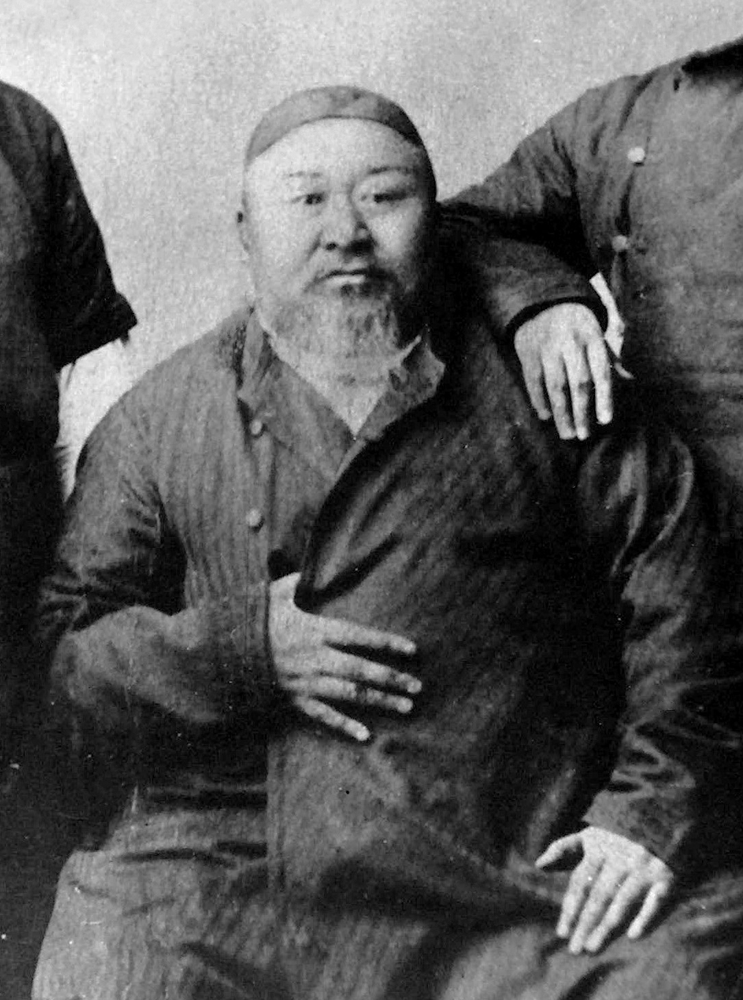
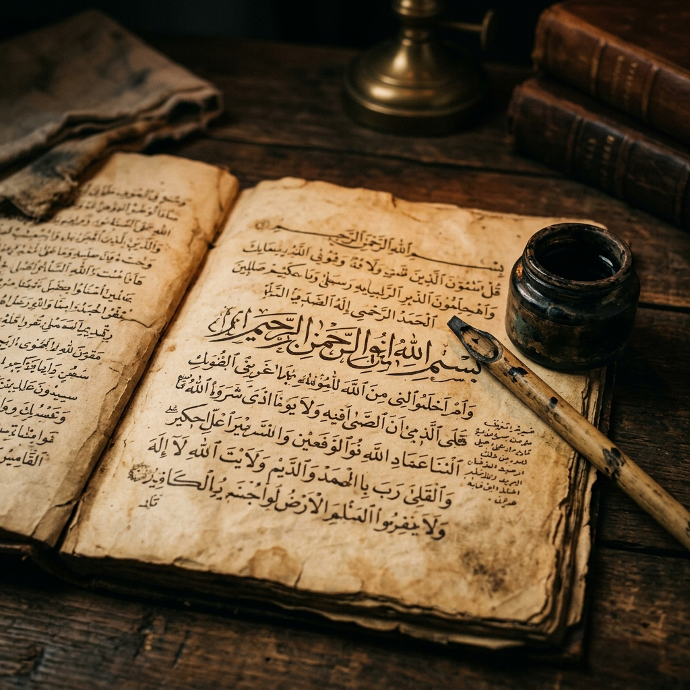
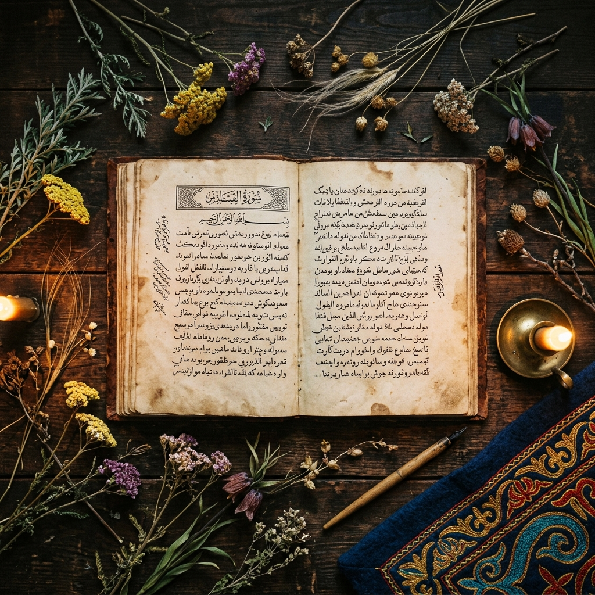

Қазақ жазба әдебиетінің негізін салушы, философ-ағартушы, ұлттың рухани жаңғыруының бастауы

Абай (Ибрагим) Құнанбайұлы — тек ұлы ақын және қазақ жазба әдебиетінің негізін салушы ғана емес, сонымен қатар өз заманының озық ойлы, бірегей философ-ағартушысы.
ХІХ ғасырдың екінші жартысы қазақ қоғамы үшін өте ауыр, дағдарысты кезең болды. Ресей империясының құрамына түпкілікті ену, дәстүрлі саяси дербестіктің жойылуы қазақ даласындағы өмір сүру салтын түбірімен өзгертті.
Абайдың пікірінше, бақытты болашаққа жететін кемеліне келген қоғамды тек кемеліне келген, рухани бай адамдар ғана құра алады. Ол адамды бүкіл әлеуметтік жүйенің абсолютті орталығына қойды.
«Адам бол!» — адамдағы табиғи өнегелілік қасиеттерді ояту, оны жаратылған «құдайлық бейнесіне» қайтару.
— Абай ҚұнанбайұлыАбай қоғамды түбегейлі өзгертуді армандады, бірақ революцияға, күш көрсетуге қатаң қарсы болды. Әрбір адам алдымен өзін, содан кейін қоғамды өзгертуі тиіс.
Дәстүрлі көшпелі қоғамға тән рудың жеке адамнан үстем болуын қатаң сынады. Жаңа заман адамы — дербес пікірі бар жеке тұлға болуы тиіс.
Егер адамның іс-әрекеті рухани қасиеттермен бекітілмесе, жинаған байлығының мағынасы жоқ. Адам ең алдымен «жылы жүрекке» ие болуы керек.

Абай дінге терең берілген адам болды. Дегенмен, ол фанатизм мен догматизмді, соқыр сенімді қатаң сынады. Шынайы дін — қорқыту құралы емес, таным құралы.
Дін адамды тек ғибадат етуге ғана емес, жасампаздыққа, білім алуға, жақсылық жасауға, адал және жанашыр болуға үндеуі тиіс.
Абай билікті негізінен мәжбүрлеу құралы ретінде қабылдады. Ол биліктің еркін адамды құлға айналдыратын барлық түрлерін аяусыз әшкереледі.
Егер билеуші өнегелі, ар-ұжданды, «таза жүректі» тұлға болса, сонда ғана билік халықтың жағдайын жақсартуға қызмет етеді.
— Абай, ҚарасөздерБиліктің еркін адамды құлға айналдыратын барлық түрлерін: жағымпаздықты, екіжүзділікті, жалғандықты және баюдың құлы болуды әшкереледі.
Патшалық Ресей енгізген сайлау жүйесінің қазақ арасында рулық тартысты күшейтіп, халықтың берекесін кетіргенін көрсетті.
Басқару жүйесінде өнегелілік бастама мен саясат тығыз байланыста болуы керек. Ол әділетті билеуші мұратын алға тартты.
Абай қоғамдағы барлық әділетсіздіктердің түп-тамыры — халықтың надандығы мен артта қалушылығы деп есептеді.
Ол орыс мәдениеті мен ғылыми-техникалық жетістіктерін қазақ қоғамын жаңғыртудың құралы деп білді, бірақ бөтен мәдениетті сыни көзқарассыз меңгеруден қатаң сақтандырды.

Абай жыршы, жырауларының дәстүрін ұстанды. Қарапайым адамдарға түсінікті жыр-өлеңдері мен «Қарасөздері» арқылы ағартушылық идеяларын таратты.
Жастарды еуропалық білімді жеке қамы үшін емес, туған халқына қызмет ету, ұлтын қараңғылықтан алып шығу үшін алуға шақырды.
Орыс мектебін бітірген жас қазақтардың «отаршылдықтың соқыр қаруына» айналып кету қаупін ашық білдірді.
«Бастысы — орыс ғылымын үйрену. Ғылым, білім, байлық, өнер — бұлардың бәрі орыстарда. Кеселдерді болдырмау және жақсылыққа қол жеткізу үшін орыс тілі мен орыс мәдениетін білу қажет.»
— Абай Құнанбайұлы